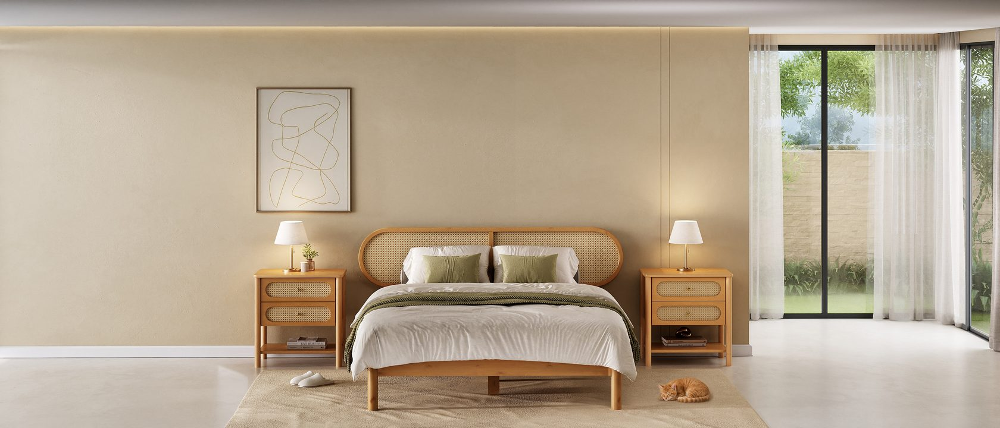

Lançamentos IDIMEX
Linha Essenza IDIMEX: Conheça a Nova Coleção de Camas e Mesas de Cabeceira em Madeira Maciça

Linha Essenza IDIMEX: o essencial para sentir-se em casa
Existem ambientes que vão além da decoração. São espaços onde encontramos tranquilidade depois de um dia intenso, compartilhamos momentos especiais e construímos pequenas histórias que fazem uma casa se tornar um lar.
O quarto é um desses lugares.
Pensando nessa conexão entre conforto, beleza e bem-estar, a IDIMEX apresenta a Linha Essenza, uma coleção de móveis de madeira maciça de pinus que combina design contemporâneo, texturas naturais e detalhes sofisticados.
Com camas de casal e queen, mesas de cabeceira e diferentes possibilidades de composição, a Essenza foi desenvolvida para quem deseja transformar o quarto em um ambiente acolhedor, funcional e cheio de personalidade.
Essenza. O essencial para sentir-se em casa.
Conheça a Linha Essenza IDIMEX
A Linha Essenza nasce da combinação entre a naturalidade da madeira maciça e elementos que valorizam o design dos móveis.
O destaque está na composição entre madeira, detalhes em rattan e palhinha, puxadores dourados e acabamentos cuidadosamente escolhidos para criar uma estética elegante e atemporal.
A coleção apresenta características que valorizam o ambiente:
- Madeira maciça de pinus como elemento central.
- Detalhes em rattan e palhinha que acrescentam textura.
- Puxadores dourados nas mesas de cabeceira.
- Cabeceiras com desenho elegante e acolhedor.
- Acabamentos Freijó e Castanho.
- Camas nos tamanhos casal padrão e queen.
- Mesas de cabeceira com diferentes configurações de gavetas.
- Design contemporâneo com inspiração natural.
Mais do que móveis que combinam entre si, a Essenza propõe um quarto onde cada detalhe contribui para uma experiência de conforto e tranquilidade.
Madeira maciça e rattan: uma combinação que valoriza o quarto
A madeira maciça de pinus é um dos principais elementos da identidade IDIMEX. Sua textura natural, os veios aparentes e a versatilidade permitem desenvolver móveis com presença visual e proposta de durabilidade.
Na Linha Essenza, esse material ganha ainda mais destaque quando combinado com o rattan.
A textura da palhinha cria contraste com as superfícies da madeira, trazendo delicadeza, profundidade e uma sensação de aconchego ao ambiente.
O resultado é uma coleção que conversa com diferentes estilos de decoração, especialmente propostas contemporâneas, naturais, minimalistas e sofisticadas.
Essa combinação permite criar um quarto elegante sem excessos, valorizando materiais, proporções e detalhes.
Camas Essenza: conforto e elegância em cada detalhe
A cama é o principal elemento visual do quarto. Por isso, sua escolha influencia não apenas o conforto, mas também a identidade de todo o ambiente.
A Linha Essenza IDIMEX apresenta diferentes modelos para atender preferências de espaço, acabamento e composição.
Cama Casal Essenza: elegância para a rotina
Para quem procura uma cama de casal de madeira maciça com design diferenciado, a Essenza oferece modelos com cabeceira em rattan e acabamento acolhedor.
A Cama Casal Essenza 138 x 188 cm Madeira Maciça com Cabeceira Rattan Freijó é uma opção para quem deseja um quarto claro, sofisticado e com textura natural.
Já a Cama Casal Essenza 138 x 188 cm Madeira com Rattan Castanho oferece uma composição mais marcante, valorizando a profundidade da tonalidade Castanho.
Ambas são alternativas para quem busca uma cama de casal com personalidade, mantendo proporções adequadas a quartos adultos que utilizam colchões de 138 x 188 cm.
Cama Queen Essenza: mais espaço para descansar
Para quem deseja mais amplitude, a Linha Essenza também apresenta modelos queen.
A Cama Queen Essenza 160 x 200 cm Madeira Maciça Rattan Castanho combina a presença da madeira com detalhes em palhinha, criando uma composição elegante e acolhedora.
Outra opção é a Cama Queen Essenza 160 x 200 cm Cabeceira Redonda Madeira Maciça Freijó, que valoriza o desenho da cabeceira e a suavidade do acabamento Freijó.
As camas queen são indicadas para quem deseja mais espaço individual durante o descanso, desde que as dimensões do quarto permitam uma circulação confortável.
Na Essenza, o tamanho da cama se une ao design para criar um ambiente pensado para desacelerar e aproveitar os momentos de descanso.
Mesas de cabeceira Essenza: funcionalidade com sofisticação
Uma mesa de cabeceira bem escolhida transforma a rotina do quarto.
É nela que ficam o livro antes de dormir, a luminária, o celular, os objetos pessoais e os pequenos elementos que acompanham nossos momentos de descanso.
Na Linha Essenza IDIMEX, as mesas de cabeceira complementam as camas com design elegante, detalhes em rattan e diferentes possibilidades de organização.
Mesa de Cabeceira Essenza com 1 gaveta
A Mesa de Cabeceira Essenza 60 cm Madeira Rattan 1 Gaveta Castanho é uma opção para quem busca um móvel de apoio funcional, com espaço para organizar objetos essenciais.
O acabamento Castanho e os detalhes em rattan ajudam a criar uma composição acolhedora, ideal para quartos com decoração natural e sofisticada.
A coleção também apresenta a Mesa de Cabeceira Essenza 60 cm Madeira Pinus com Rattan Lateral e Puxador Dourado, que valoriza a textura lateral e o detalhe metálico do puxador.
Mesa de Cabeceira Essenza com 2 gavetas
Para quem precisa de mais espaço de armazenamento, os modelos com duas gavetas oferecem praticidade para guardar acessórios e objetos pessoais.
A Mesa de Cabeceira Essenza 2 Gavetas Freijó com Palhinha e Puxador Dourado combina acabamento claro, textura natural e detalhes sofisticados.
Já a Mesa de Cabeceira Essenza 2 Gavetas Castanho Verniz traz uma alternativa em acabamento mais escuro, ideal para quem busca profundidade e presença visual.
Com diferentes configurações, a coleção permite escolher a mesa de cabeceira conforme a necessidade de organização e o estilo do ambiente.
Freijó ou Castanho: qual acabamento escolher?
Uma das vantagens da Linha Essenza é a possibilidade de criar diferentes atmosferas utilizando os acabamentos da coleção.
Essenza Freijó
O acabamento Freijó valoriza a leveza visual do ambiente. Combina com paredes claras, tecidos naturais, iluminação suave e decoração contemporânea.
É uma escolha para quem deseja um quarto luminoso, acolhedor e com estética natural.
Essenza Castanho
O acabamento Castanho traz profundidade, personalidade e sensação de aconchego.
Combina com ambientes sofisticados, paredes neutras, tecidos claros e elementos decorativos que criam contraste com a madeira.
Ambos os acabamentos valorizam o design da Linha Essenza e permitem diferentes interpretações para o quarto adulto.
Como montar um quarto completo com a Linha Essenza?
Criar um quarto harmonioso começa pela escolha de móveis que conversem entre si.
Na Linha Essenza, camas e mesas de cabeceira compartilham uma linguagem visual, facilitando a composição do ambiente.
Para planejar seu quarto, considere:
- Escolher primeiro o tamanho da cama: casal ou queen.
- Conferir as medidas disponíveis e a circulação.
- Selecionar o acabamento Freijó ou Castanho.
- Definir mesas de cabeceira com uma ou duas gavetas.
- Combinar roupas de cama e tecidos em tons neutros.
- Utilizar iluminação suave para valorizar as texturas.
- Evitar excesso de elementos decorativos.
Com escolhas equilibradas, é possível transformar o quarto em um ambiente que transmite personalidade, organização e conforto.
Design que permanece, conforto que acolhe
A Linha Essenza representa uma proposta de design que valoriza o essencial.
A madeira maciça de pinus reforça a identidade natural dos móveis. O rattan acrescenta textura. Os puxadores dourados trazem delicadeza. As proporções e os acabamentos ajudam a construir uma estética atemporal.
Na IDIMEX, o desenvolvimento de móveis une projeto industrial, funcionalidade e atenção à qualidade, buscando oferecer produtos que façam sentido para a rotina da casa.
A proposta da Essenza é criar um quarto que continue acolhedor mesmo quando a decoração mudar.
Um ambiente onde o conforto não depende de excessos, mas da escolha dos elementos certos.
Conclusão
A Linha Essenza IDIMEX é um lançamento para quem busca transformar o quarto com móveis de madeira maciça, detalhes em rattan e design contemporâneo.
Com camas de casal e queen, mesas de cabeceira com diferentes configurações e acabamentos Freijó e Castanho, a coleção oferece possibilidades para criar ambientes elegantes, funcionais e acolhedores.
Mais do que acompanhar tendências, a Essenza valoriza aquilo que realmente importa: conforto, beleza natural e a sensação de estar em casa.
Essenza. O essencial para sentir-se em casa.
Feito de Madeira. Feito para durar.
Perguntas frequentes
O que é a Linha Essenza IDIMEX?
É uma coleção de móveis para quarto adulto que reúne camas de casal, camas queen e mesas de cabeceira, valorizando madeira maciça de pinus, detalhes em rattan e design contemporâneo.
Quais tamanhos de cama estão disponíveis na Linha Essenza?
A coleção apresenta modelos de casal padrão para colchões de 138 x 188 cm e modelos queen para colchões de 160 x 200 cm. Antes da compra, confira as medidas externas de cada cama.
A Linha Essenza possui mesas de cabeceira?
Sim. A coleção conta com diferentes modelos de mesas de cabeceira, incluindo versões com uma ou duas gavetas e detalhes em rattan.
Quais são os acabamentos da Linha Essenza?
Os modelos apresentados possuem opções em Freijó e Castanho, permitindo criar diferentes estilos de decoração para o quarto adulto.
A Linha Essenza é feita de madeira maciça?
A madeira maciça de pinus é um dos principais materiais da coleção. Para conhecer a composição de cada modelo e seus elementos decorativos, consulte a ficha técnica do produto.
Como combinar camas e mesas de cabeceira Essenza?
Escolha o tamanho da cama conforme o ambiente e combine com mesas de cabeceira de acabamento semelhante. Elementos em rattan, tecidos neutros e iluminação suave ajudam a criar uma composição harmoniosa.